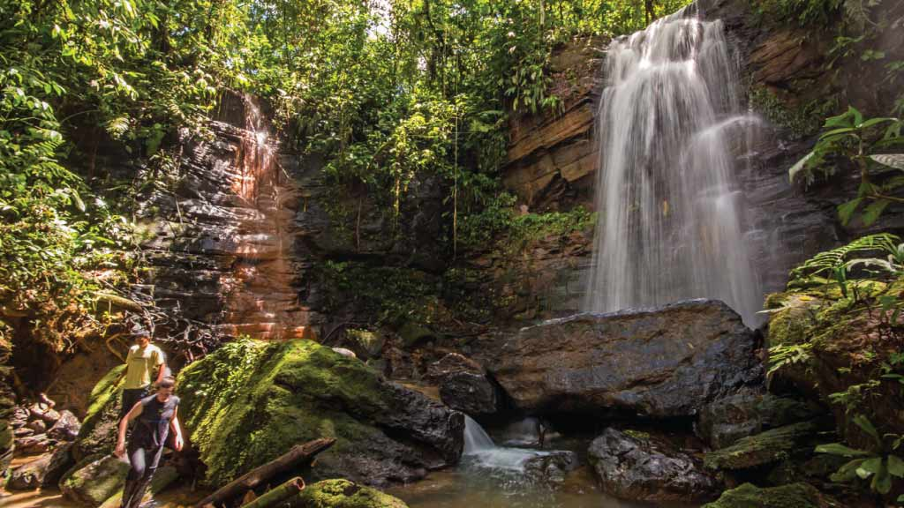
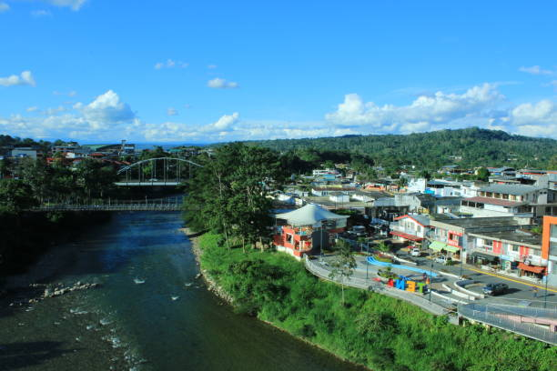
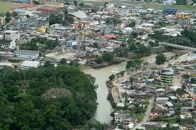
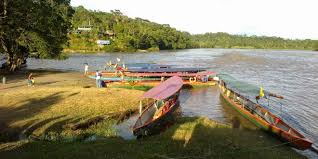

|  | La ciudad de Tena, conocida como la “Capital de la Canela y la Guayusa”, está rodeada por una de las selvas más ricas y vibrantes de la Amazonía ecuatoriana. Su exuberante vegetación, ríos cristalinos y cascadas ocultas conforman un paraíso natural que invita a la aventura y al asombro. En sus alrededores, la selva es hogar de comunidades indígenas, biodiversidad única y paisajes que combinan misterio, espiritualidad y vida silvestre. Recorrer sus senderos o navegar por el río Napo permite conectar profundamente con la naturaleza y con la esencia ancestral de la Amazonía. |
| El río Tena, que atraviesa la ciudad del mismo nombre, no solo embellece el paisaje urbano, sino que también ofrece un escenario natural perfecto para la práctica de deportes acuáticos. Sus aguas claras y corrientes desafiantes hacen del lugar un destino ideal para actividades como el kayak y el rafting, atrayendo tanto a aventureros locales como a turistas internacionales. La experiencia de navegar por sus rápidos combina adrenalina con vistas impresionantes de la selva amazónica, convirtiendo al río Tena en uno de los principales atractivos turísticos de la región. |  |
|  | La ciudad de Tena combina el encanto urbano con la majestuosidad de su entorno natural. Desde sus miradores y avenidas es posible apreciar bellas vistas que conectan la ciudad con la selva amazónica, ofreciendo paisajes llenos de vida, color y serenidad. El contraste entre la modernidad de sus espacios urbanos y la riqueza verde que la rodea convierte a Tena en un destino visualmente cautivador. Cada rincón invita a detenerse, observar y disfrutar de la armonía entre la ciudad y la naturaleza. |
| Las canoas tradicionales son parte esencial del legado cultural amazónico y han sido utilizadas durante siglos como medio de transporte por los pueblos indígenas que habitan las orillas de los ríos. En la ciudad de Tena y sus alrededores, estas embarcaciones aún navegan las aguas, no solo como herramienta de vida diaria, sino también como una experiencia turística auténtica. Pasear en canoa por los ríos amazónicos permite conocer de cerca la selva, sus sonidos, su tranquilidad y la forma de vida de las comunidades que la habitan. |  |